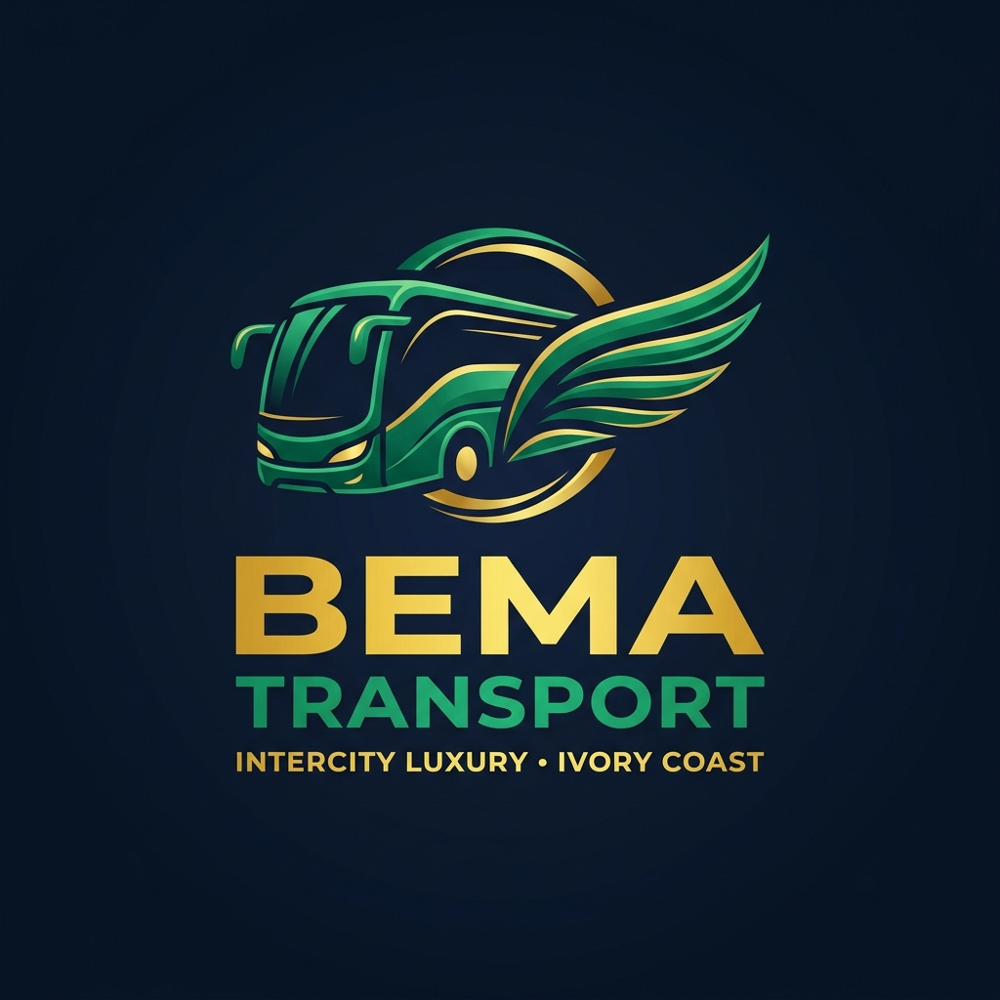
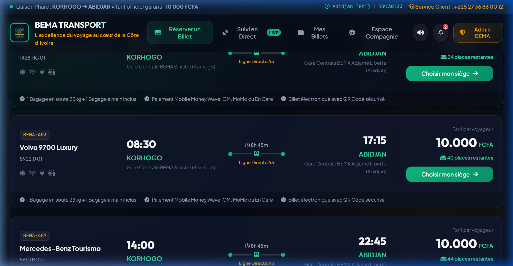
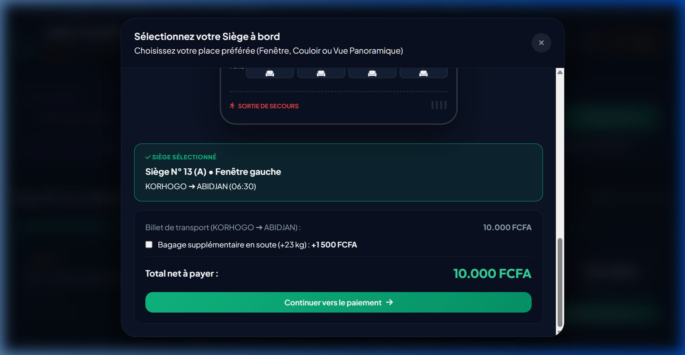
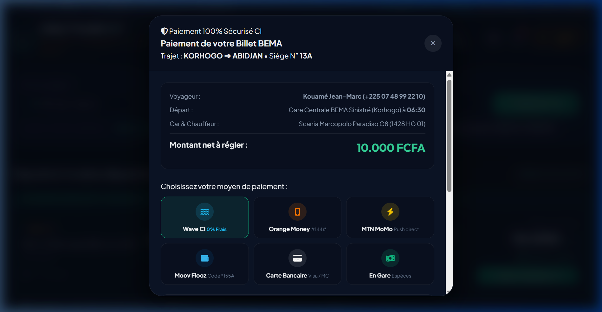
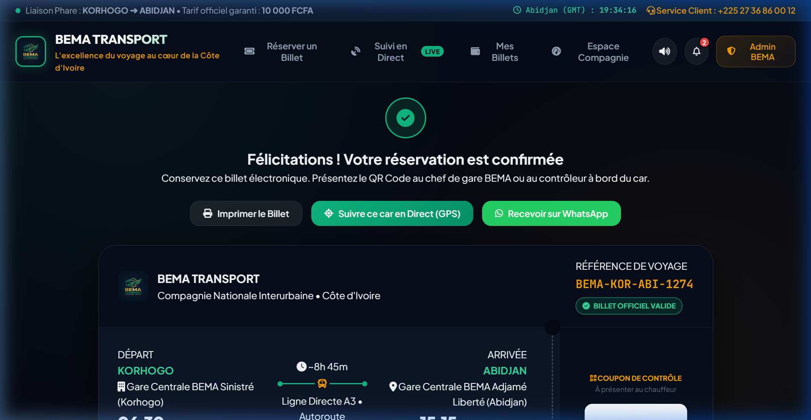
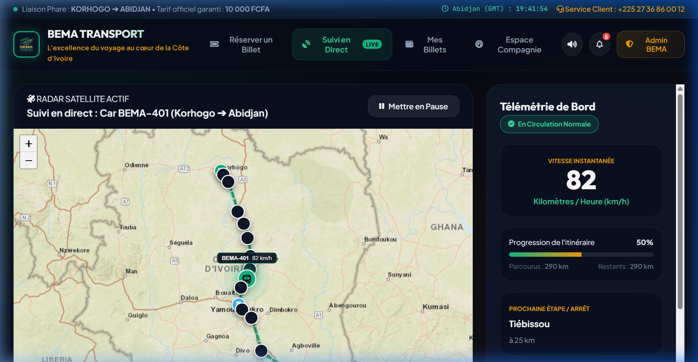
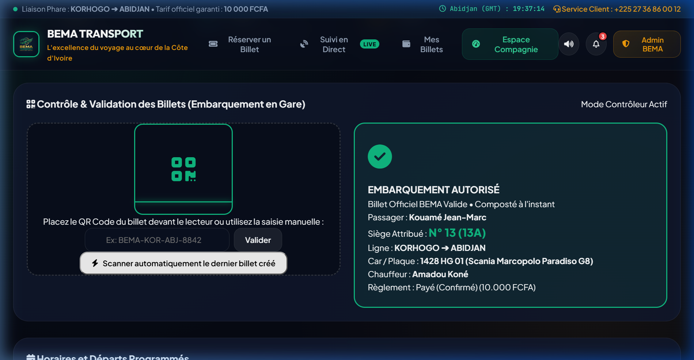

L'excellence du voyage au cœur de la Côte d'Ivoire
Plateforme Numérique Intégrée de Réservation, Suivi GPS en Temps Réel et Gestion de Flotte de Transport Interurbain
Le transport routier de passagers en Côte d'Ivoire représente plus de 85% des déplacements interurbains nationaux, porté par une population dynamique de plus de 30 millions d'habitants et des échanges économiques intenses entre le pôle économique d'Abidjan et les capitales régionales de l'intérieur (Bouaké, Yamoussoukro, Korhogo, San-Pédro).
Cependant, le secteur souffre d'un déficit technologique majeur : la billetterie traditionnelle repose encore sur des carnets papier ou des guichets manuels saturés à la gare d'Adjamé ou de Korhogo, les passagers ne peuvent pas choisir leur place, les départs accusent des retards imprévisibles et les gestionnaires manquent d'outils télématiques fiables pour superviser leurs cars sur l'Autoroute du Nord.
Réservation à distance en 2 minutes, choix du siège sur plan 2x2 interactif, e-billet dématérialisé avec QR Code et paiement direct par Mobile Money ivoirien.
Traçabilité satellitaire totale du car le long des 580 km de l'axe Korhogo-Abidjan, avec vitesse instantanée, décompte kilométrique et estimation précise de l'heure d'arrivée (ETA).
Pour le démarrage opérationnel, BEMA TRANSPORT s'implante sur l'artère maîtresse du pays reliant la Région des Savanes (Poro) au District Autonome d'Abidjan :
| Itinéraire | Distance | Durée Moyenne | Tarif Fixé | Gares Desservies |
|---|---|---|---|---|
| Korhogo ➔ Abidjan | 580 km | 8h 45m | 10 000 FCFA | Gare Sinistré Korhogo ➔ Niakara ➔ Katiola ➔ Bouaké ➔ Yamoussoukro ➔ Tiassalé ➔ Adjamé Liberté |
| Bouaké ➔ Abidjan | 340 km | 5h 00m | 6 000 FCFA | Gare BEMA Commerce (Bouaké) ➔ Yamoussoukro ➔ Adjamé |
| Yamoussoukro ➔ Abidjan | 240 km | 3h 15m | 4 000 FCFA | Gare Fondation (Yamoussoukro) ➔ Toumodi ➔ Adjamé |

L'application supprime toute friction à l'achat grâce à un entonnoir de réservation fluide en 3 étapes : sélection du trajet, choix visuel du siège, et règlement immédiat via les portefeuilles électroniques utilisés quotidiennement par les Ivoiriens.
Inspiré des plateformes européennes (FlixBus, Deutsche Bahn), le client visualise la structure exacte de l'autocar (Scania Marcopolo G8 de 48 places) :

La Côte d'Ivoire est le leader ouest-africain du Mobile Money. La plateforme intègre sans intermédiaire tous les opérateurs agréés :
#144*82#.
Toutes les transactions sont instantanément créditées sur le compte marchand de BEMA TRANSPORT. Aucun agent de gare ne manipule d'argent liquide sur les réservations en ligne, supprimant 100% des risques d'impayés, de fausse monnaie ou de coulage financier.
Dès confirmation du paiement, un e-Billet officiel certifié est généré en temps réel pour le voyageur. Il répond aux normes d'authentification du transport interurbain et fait office de preuve de transport légale et d'étiquette bagage.

Le QR code encode la référence de réservation, l'identifiant du car, le numéro de siège et l'identité du passager. Même en cas de coupure réseau en gare de Korhogo, le scanner BEMA valide l'authenticité du billet en local grâce à son algorithme de vérification asynchrone.
Un simple clic permet au client d'expédier son titre de transport directement sur son WhatsApp ou de l'imprimer au format standard (A4 ou ticket thermique). Les convocations indiquent l'heure limite d'accès (30 minutes avant l'heure de départ officielle).
| Étape | Action Voyageur | Action Contrôleur BEMA | Résultat Système |
|---|---|---|---|
| 1. Présentation | Affiche le QR code sur son smartphone ou version papier | Vise le QR avec le lecteur ou saisit la référence | Lecture instantanée (< 1 sec) |
| 2. Conformité | Présente sa pièce d'identité (CNI / Passeport ONECI) | Vérifie la concordance du nom et du siège | Double-bip sonore de validation |
| 3. Compostage | Accède au fauteuil assigné dans le car | Confirme l'embarquement définitif | Statut mis à jour sur EMBARQUÉ (billet verrouillé contre toute réutilisation) |
BEMA TRANSPORT est la première compagnie interurbaine de Côte d'Ivoire à intégrer un Radar Télématique Ouvert permettant aux passagers, à leurs familles d'accueil et au poste de commandement de visualiser le car en déplacement continu sur la carte nationale.

Le cruscotto affiche en direct :
En cas de ralentissement aux péages autoroutiers (Attinguié, Yamoussoukro) ou de contrôle douanier, le système met à jour l'ETA, diffuse un carillon d'avertissement et notifie les voyageurs par SMS/Push pour une transparence exemplaire.
1. Gare Sinistré (Korhogo) [PK 0] ➔ 2. Péage Nord [PK 12] ➔ 3. Niakaramandougou [PK 110] ➔ 4. Katiola [PK 185] ➔ 5. Gare Centrale Bouaké [PK 245] ➔ 6. Yamoussoukro [PK 360] ➔ 7. Toumodi Péage [PK 405] ➔ 8. Relais Tiassalé [PK 480] ➔ 9. Péage Attinguié [PK 545] ➔ 10. Gare Adjamé Liberté (Abidjan) [PK 580].
L'Espace Gestionnaire met à la disposition de la direction et des chefs d'exploitation un poste de commande unifié pour piloter les recettes journalières, planifier les rotations et superviser la conformité des autocars.

| ID Car | Immatriculation | Modèle & Carrosserie | Capacité | Chauffeur Titulaire | Statut |
|---|---|---|---|---|---|
| BUS-01 | 1428 HG 01 |
Scania Marcopolo Paradiso G8 | 48 fauteuils | Amadou Koné (12 ans exp.) | En Circulation |
| BUS-02 | 8922 JJ 01 |
Volvo 9700 Luxury Coach | 52 fauteuils | Seydou Traoré (10 ans exp.) | À Quai (Prêt) |
| BUS-03 | 5610 HG 01 |
Mercedes-Benz Tourismo | 48 fauteuils | Bakary Ouattara (14 ans exp.) | À Quai |
| BUS-04 | 9904 KK 01 |
Marcopolo Double Decker VIP | 40 couchettes | Ibrahim Coulibaly (11 ans exp.) | Service Nuit |
Calculé sur la base d'un autocar grand tourisme de 48 places à un taux moyen d'occupation de 85% :
| Poste Financier | Montant par Trajet Simple | Projection Mensuelle (4 Départs/J) |
|---|---|---|
| Recettes Billetterie (10 000 FCFA × 41 passagers) | 410 000 FCFA | 49 200 000 FCFA |
| Recettes Bagages Supplémentaires & Fret Express | 35 000 FCFA | 4 200 000 FCFA |
| Chiffre d'Affaires Brut Estimé | 445 000 FCFA | 53 400 000 FCFA |
| Carburant Gasoil (180 Litres × 750 FCFA) | - 135 000 FCFA | - 16 200 000 FCFA |
| Frais de Péage Autoroutier (Attinguié, Yamoussoukro) | - 18 000 FCFA | - 2 160 000 FCFA |
| Rémunération Équipage & Maintenance Préventive | - 45 000 FCFA | - 5 400 000 FCFA |
| Marge Nette d'Exploitation (Avant Impôt) | + 247 000 FCFA (55%) | + 29 640 000 FCFA |
Mise en service complète des 4 départs quotidiens Korhogo-Abidjan, bornes de contrôle en gare de Korhogo et Adjamé, intégration Wave et Orange Money.
Ouverture des lignes Man (Région des 18 Montagnes), San-Pédro (Premier port cacaoyer) et Daloa avec intégration de 12 nouveaux véhicules.
Korhogo • Abidjan • République de Côte d'Ivoire